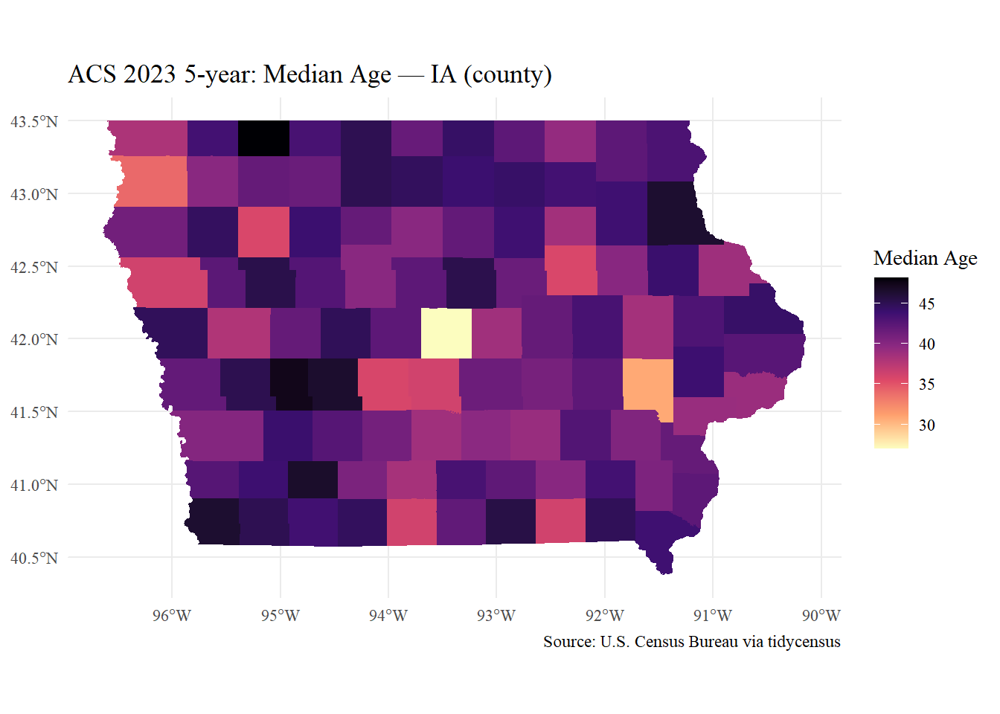

library(tidycensus)
library(tigris)To enable caching of data, set `options(tigris_use_cache = TRUE)`
in your R script or .Rprofile.library(sf)Linking to GEOS 3.13.1, GDAL 3.11.0, PROJ 9.6.0; sf_use_s2() is TRUElibrary(dplyr)
Attaching package: 'dplyr'The following objects are masked from 'package:stats':
filter, lagThe following objects are masked from 'package:base':
intersect, setdiff, setequal, unionlibrary(ggplot2)
library(readr)
library(scales)
Attaching package: 'scales'The following object is masked from 'package:readr':
col_factoroptions(tigris_use_cache = TRUE)
# 1) API key
census_api_key(Sys.getenv("CENSUS_KEY"), install = FALSE)To install your API key for use in future sessions, run this function with `install = TRUE`.# 2) Exploring variables
vars <- load_variables(2023, "acs5", cache = TRUE)
vars |> dplyr::filter(grepl("^B01", name)) |> dplyr::slice_head(n = 10)# A tibble: 10 × 4
name label concept geography
<chr> <chr> <chr> <chr>
1 B01001A_001 Estimate!!Total: Sex by Age (W… tract
2 B01001A_002 Estimate!!Total:!!Male: Sex by Age (W… tract
3 B01001A_003 Estimate!!Total:!!Male:!!Under 5 years Sex by Age (W… tract
4 B01001A_004 Estimate!!Total:!!Male:!!5 to 9 years Sex by Age (W… tract
5 B01001A_005 Estimate!!Total:!!Male:!!10 to 14 years Sex by Age (W… tract
6 B01001A_006 Estimate!!Total:!!Male:!!15 to 17 years Sex by Age (W… tract
7 B01001A_007 Estimate!!Total:!!Male:!!18 and 19 years Sex by Age (W… tract
8 B01001A_008 Estimate!!Total:!!Male:!!20 to 24 years Sex by Age (W… tract
9 B01001A_009 Estimate!!Total:!!Male:!!25 to 29 years Sex by Age (W… tract
10 B01001A_010 Estimate!!Total:!!Male:!!30 to 34 years Sex by Age (W… tract # 3) Parameters
state_abbr <- "IA"
geo_level <- "county"
my_vars <- c(median_age = "B01002_001",
total = "B15003_001",
bachelors = "B15003_022",
masters = "B15003_023",
professional = "B15003_024",
doctorate = "B15003_025")
year_acs <- 2023
survey <- "acs5"
# 4) Download
acs <- get_acs(
geography = geo_level,
variables = my_vars,
state = state_abbr,
year = year_acs,
survey = survey,
geometry = TRUE
)Getting data from the 2019-2023 5-year ACS# 5) Wide format for convenience
acs_wide <- acs |>
tidyr::pivot_wider(
id_cols = c(GEOID, NAME, geometry),
names_from = variable,
values_from = c(estimate, moe)
) |>
mutate(college_grad = estimate_bachelors + estimate_masters +
estimate_professional + estimate_doctorate,
college_rate = college_grad / estimate_total)
# 6) Map (Median Age)
ggplot(acs_wide) +
geom_sf(aes(fill = estimate_median_age), color = NA) +
scale_fill_viridis_c(name = "Median Age", option = "magma", direction = -1) +
labs(title = paste0("ACS ", year_acs, " 5-year: Median Age — ", state_abbr, " (", geo_level, ")"),
caption = "Source: U.S. Census Bureau via tidycensus") +
theme_minimal(base_family = "serif")
# 7) Table (Top/Bottom 10 by College Graduation Rate)
top10 <- acs_wide |>
arrange(desc(college_rate)) |>
select(NAME, college_rate) |>
slice_head(n = 10) |>
mutate(college_rate = percent(college_rate, accuracy = 0.1))
bottom10 <- acs_wide |>
arrange(college_rate) |>
select(NAME, college_rate) |>
slice_head(n = 10) |>
mutate(college_rate = percent(college_rate, accuracy = 0.1))
top10Simple feature collection with 10 features and 2 fields
Geometry type: MULTIPOLYGON
Dimension: XY
Bounding box: xmin: -94.28072 ymin: 40.89972 xmax: -90.31277 ymax: 42.90725
Geodetic CRS: NAD83
# A tibble: 10 × 3
NAME college_rate geometry
* <chr> <chr> <MULTIPOLYGON [°]>
1 Johnson County, Iowa 54.6% (((-91.83415 41.68739, -91.83416 41.6879…
2 Story County, Iowa 53.3% (((-93.69876 42.03938, -93.69871 42.0417…
3 Dallas County, Iowa 51.6% (((-94.2807 41.79098, -94.28054 41.8344,…
4 Jefferson County, Iowa 41.6% (((-92.17997 41.16266, -92.06334 41.1631…
5 Polk County, Iowa 39.5% (((-93.81572 41.86342, -93.77617 41.8634…
6 Scott County, Iowa 36.2% (((-90.8998 41.5986, -90.89976 41.60069,…
7 Bremer County, Iowa 35.2% (((-92.5548 42.70269, -92.5545 42.73013,…
8 Linn County, Iowa 34.8% (((-91.83476 42.08249, -91.83472 42.0827…
9 Marion County, Iowa 33.1% (((-93.32861 41.50782, -93.29166 41.5080…
10 Dubuque County, Iowa 32.9% (((-91.13444 42.55866, -91.13394 42.5877…bottom10Simple feature collection with 10 features and 2 fields
Geometry type: MULTIPOLYGON
Dimension: XY
Bounding box: xmin: -95.86191 ymin: 40.57071 xmax: -90.8969 ymax: 43.50099
Geodetic CRS: NAD83
# A tibble: 10 × 3
NAME college_rate geometry
* <chr> <chr> <MULTIPOLYGON [°]>
1 Lucas County, Iowa 14.5% (((-93.55756 41.16127, -93.54343 41.16122,…
2 Osceola County, Iowa 15.4% (((-95.86127 43.2938, -95.86047 43.3455, -…
3 Taylor County, Iowa 15.5% (((-94.92866 40.8136, -94.92861 40.82092, …
4 Emmet County, Iowa 15.7% (((-94.9147 43.50022, -94.91457 43.50087, …
5 Clayton County, Iowa 15.7% (((-91.60841 42.81291, -91.60756 42.81493,…
6 Keokuk County, Iowa 15.9% (((-92.412 41.50955, -92.35539 41.50965, -…
7 Clarke County, Iowa 16.0% (((-94.01489 40.99799, -94.01465 40.99999,…
8 Wayne County, Iowa 16.0% (((-93.55695 40.81236, -93.55654 40.89829,…
9 Louisa County, Iowa 16.5% (((-91.48582 41.22067, -91.48537 41.24965,…
10 Davis County, Iowa 17.6% (((-92.63909 40.89889, -92.59614 40.89894,…# 8) Saving outputs
readr::write_csv(st_drop_geometry(acs_wide), "acs_iowa.csv")